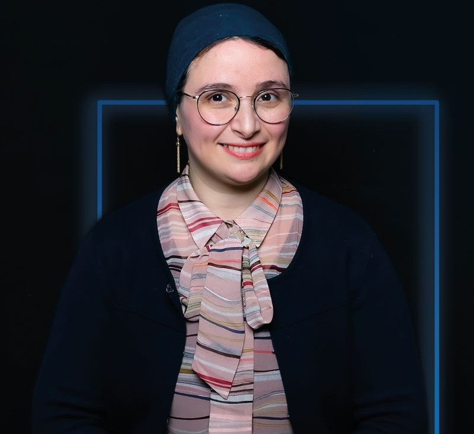
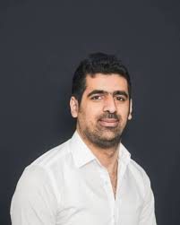
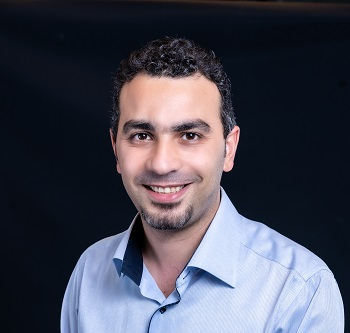
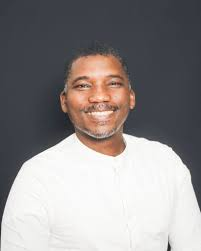
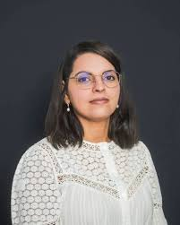
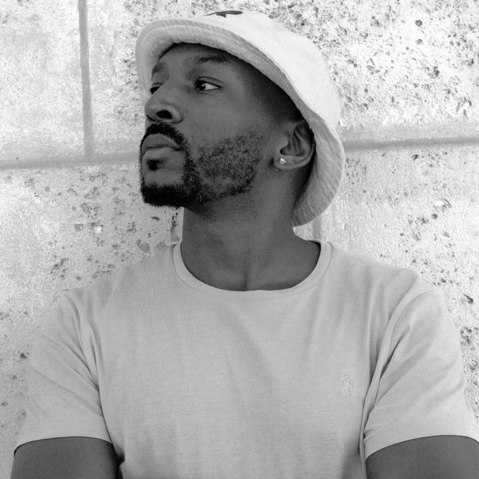

Le Corps Enseignant
Des experts académiques et professionnels au service de votre réussite.
Mathématiques, Informatique, Data et IA
Carlo Bianca
Enseignant chercheur en mathématiques

Asma Gabis
Enseignante-Chercheuse en Informatique et responsable du département informatique

Mohamed Hamidi
Enseignant-chercheur en Informatique
Nicolas Flasque
Enseignant - Ingenieur pédagogique

Mohamad Ghassany
Enseignant-chercheur de l'axe de recherche "Données et Intelligence Artificielle" / Manageur en cycle M des pôles Data et IT / Responsable de la Majeure "Data & Artificial Intelligence"
Johannes Gomolka
Enseignant-chercheur de l'axe de recherche "Sécurité, Résilience et Confiance Numérique" & responsable de la Majeure "IT for Finance"
Systèmes Réseaux et Sécurité

Max Agueh
Responsable du pôle "Sécurité, Réseaux et Systèmes Embarqués"

Fériel Bouakkaz
Enseignante-chercheuse de l'axe de recherche "Sécurité, Résilience et Confiance Numérique"
Dario Vieira
Professeur associé / Responsable de l'axe de recherche "Réseaux de Communication" / Responsable des modules d'ouverture / Réferent Science ouvertes
Humanités, Langues et Gestion
Jean Soma
Responsable du département de culture & communication

Tito Habintwalli
Chargé de missions de langues